|
Корсет
в современной моде
|
||
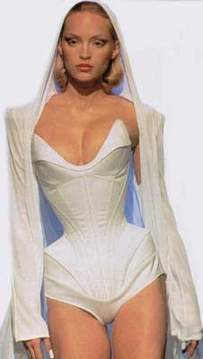 |
Довольно
долгое время корсет был лишь красивой ассоциацией с романтическими временами
прошлых столетий. |
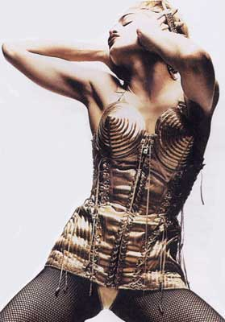 |
| Тьерри Мюглер. Коллекция от-кутюр 1998 г. | Корсет. Жан-Поль Готье. 1990 г. | |
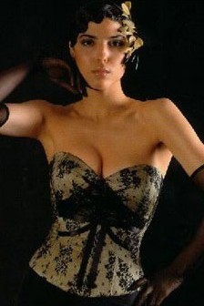 |
Сегодня
обращение модельеров к корсетам, возможно, является не чем иным, как ответной
реакцией на столь длительное господство минимализма, увлечением бесполым
стилем унисекс и не нашла ничего лучше, чем вернуться к тому, от чего стартовала.
И вот "орудие пыток" вновь покоряет подиумы, став одним из самых модных элементов одежды. Сегодня корсеты на гребне популярности, и редкий модный показ, как за границей, так и у нас в России обходится без них. Успех корсетов – в их многообразии, которое простирается от классических форм до экстравагантных образцов. |
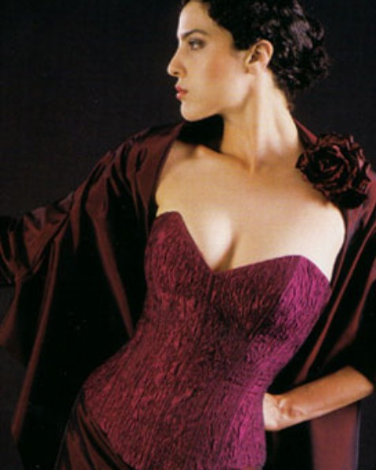 |
| Каталог корсетов. Revanche de la femme. Berlin. 2004 | Каталог корсетов. Revanche de la femme. Berlin. 2004 | |
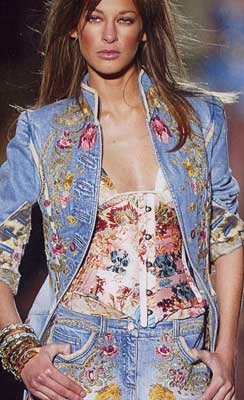 |
Корсет и корсаж, открывая взорам те участки тела, которыми
можно похвастаться, и моделируя "проблемные зоны" фигуры, одинаково
претендуют на эротику и функциональность. Они снова могут расчитывать на успех в современной моде, причем не только в качестве белья, но как самостоятельный элемент одежды, позволяющий подчеркивать формы тела, закаленного фитнесом. Ведь как писал журнал VOGUE, "красивая фигура - не дар божий, а результат хорошей гимнастики и хорошего корсета". В моде корсеты и платья с корсажем из блестящих материалов, необычные цвета, оригинальные рисунки. Актуальны топы в стиле нижнего белья, корсеты с драпировкой, корсажи на узких бретельках. |
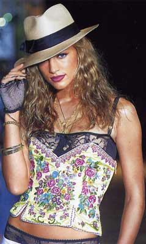 |
| Cavalli. 2004 г. |
Betsey
Johnson. 2004 г.
|
|
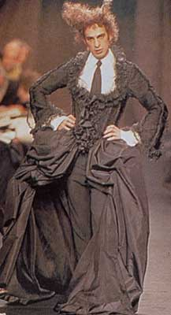 |
Как ни странно, но корсеты присутствуют не только в женской моде. Вспомнив о том, что корсеты изначально были больше прерогативой мужчин, чем женщин, дизайнеры создают смелые и эпатажные коллекции для мужчин с использованием корсетов. | 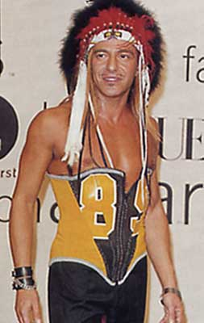 |
| Жан Поль Готье. Карнавал полов в коллекции от-кутюр 1998 г. | Джон Гальяно. Коллекция лето 2000 г. |
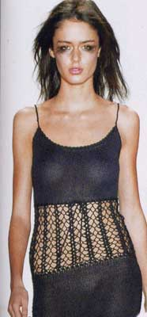 |
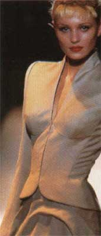 |
Примечательно, что корсет часто используется дизайнерами не только в чистом виде, но и в качестве ассоциативного образа: использование корсажных косточек в платьях и жакетах создают эффект "осиной талии", а блочки и традиционная корсетная шнуровка выступают в ряде моделей как изысканная отделка или, подчас, лишь как тонкий намек на связь с корсетной темой. К слову, мягко расходящаяся декоративная шнуровка на юбке выглядит весьма пикантно. | 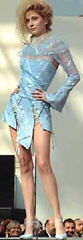 |
| Body Gear. 2004 г. | Ателье Rundschau 8/2002 | Валентин Юдашкин. Коллекция "Корсеты" 2004. | |
|
Вопросы
для самопроверки
|
|||
| 1.
Когда корсет вновь вошёл в моду? 2. В чем секрет популярности корсетов? 3. Какие корсеты существуют в современной моде? 4. Какие элементы корсета и для чего используются в современном костюме? |
|||